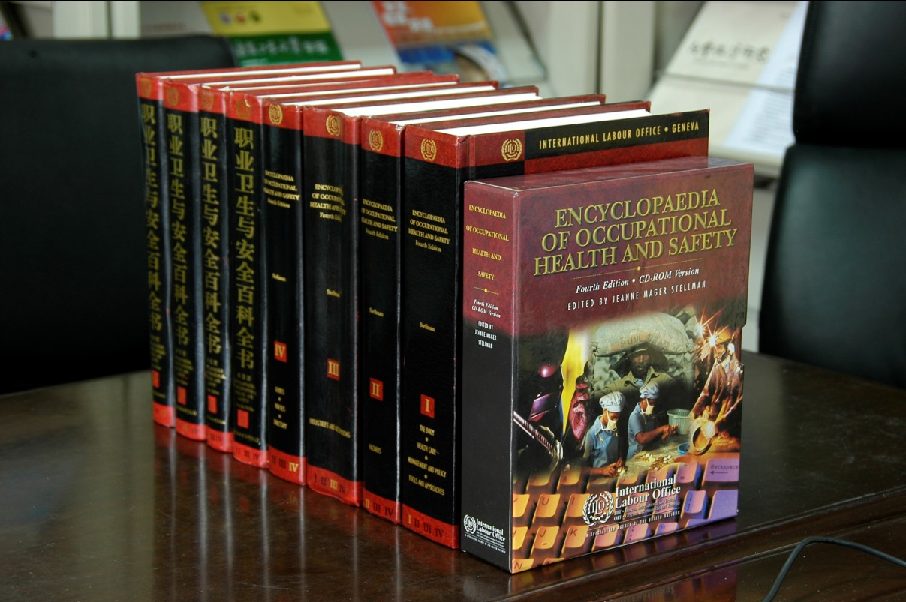

职业安全卫生百科全书
《职业安全卫生百科全书》是国际劳工组织组织全球职业安全卫生有关专家编写的职业安全卫生类书籍。到目前为止，已出版四个版本，第一版于1930年出版，第二版（1971年），第三版（1983年）和第四版（1998年）。
目前读者正在使用的《百科全书》是第四版，它是由全世界60多个国家的1000余名一流的职业安全卫生专家和职业安全卫生机构经过长时间讨论和协商完成的。其宗旨是为专业人员和相关的非专业人员（律师、医生、工业卫生学家、毒理学家等）提供明确易懂的答案，解答他们在工作场所中所遇到的安全卫生方面的主要问题。全书内容涵盖职业卫生与安全方面核心领域及相关领域四千多页的安全信息；采用教科书式的编写方法，共分为四卷，卷中不同章节分别介绍了各个学科的相关知识；书中有大量图片插图，引用了大量文献，提供了主题索引、化学品名称索引和作者姓氏索引，使读者能够方便快捷的找到信息；概要介绍了两千余种化学品的关键信息，其中包括CAS登记号、别名、物性数据、危害信息、化学品索引等；同时，第四版还提供了CD-ROM版本，内含强大的检索工具；第四版还提供了英文和法文的免费在线阅读。
国际劳工组织职业安全卫生百科全书的第五版将会完全是电子版本，为世界各地的数以亿计读者提供及时更新的、易于使用的电子信息资源。

欲想了解详情，请点击： http://www.ilo.org/safework/WCMS_113329/lang--en/index.htm